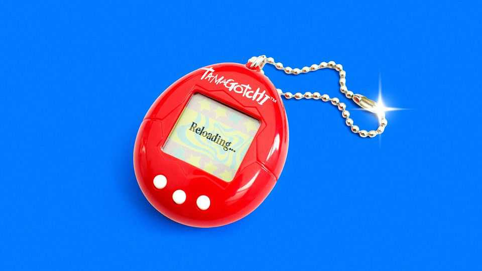

Squeeze into those skinny jeans: millennial culture is back
A tech-powered 2000s revival represents the biggest nostalgia boom yet

Oct 15th 2026
The entertainment industry has caught a millennium bug. Arriving in cinemas in November is “Focker-in-Law”, the latest follow-up to “Meet the Parents” (2000), in which Ben Stiller struggled with his girlfriend’s difficult dad. (In the new film Mr Stiller, now 60, plays the father.) No Doubt, whose hits in the 1990s included “Just a Girl”, recently finished a comeback residency at the Sphere in Las Vegas. Meanwhile home audiences can look forward to reboots including “The Inbetweeners”, a popular television series from 2008, and “Tomb Raider”, a classic game of the 1990s that will be re-released in souped-up form in February 2027.
Millennial culture is back, faster than you can say “oat-milk latte”. Millennials, who are now aged 30-45, are nearing the peak of their spending power—and entering management-level jobs where they can call the shots on new creative projects. The result is that their formative era, the late 1990s and 2000s, is back in fashion. It may seem like only yesterday that millennials were being mercilessly mocked by Gen Z on social media over everything from their grey home interiors to their too-tight trousers. But now they are taking their revenge. “The 2000s called—skinny jeans are back,” declared Vogue, a fashion bible, earlier this year.
Every generation has its revival, as its members grow up and recreate the culture of their youth. The 1990s saw a 1970s resurgence, as middle-aged boomers made nostalgic films such as “The Brady Bunch Movie” and “Dazed and Confused”. Before that there was an outbreak of ’50s nostalgia in the 1970s, with shows like “Happy Days”, “M*A*S*H” and the movie “Grease”. A series of 1950s rock’n’roll revival concerts brought back stars like Chuck Berry and Bill Haley & His Comets, filling venues such as Madison Square Garden.
Yet social and economic changes are combining to quicken and amplify these cultural revivals. The upshot is that the new millennial moment may be the most powerful wave of nostalgia yet, reaching more people than ever before.
One reason is a new creative conservatism, caused by old media’s pinched economics. Cinema-going has fallen sharply since the pandemic (though recently it has become cool again), and social apps are eating into TV viewing. Risk-averse Hollywood executives are therefore falling back on reliable intellectual property. As they run out of superheroes, they are scouring their back catalogues. Earlier this year “The Devil Wears Prada 2” out-grossed the 2006 original. In September Sandra Bullock and Nicole Kidman returned after 28 years for a sequel to “Practical Magic”. Next year a “Baywatch” reboot will squeeze new bodies into the red swimsuits that graced TV sets in the 1990s.
The revival is not limited to Hollywood. Indian moviegoers flocked to “Border 2”, the sequel to a hit war film of 1997, after its release in January. Japan’s anime studios have also been cranking out remakes, such as “Hell Teacher” and “Yaiba: Samurai Legend”, aimed at middle-aged millennials who enjoyed the originals in their youth.
Meanwhile, a live-events boom has helped get the music industry into nostalgia mode. Concerts are larger and more lucrative, so retired musicians have greater incentive to get back on the road. Oasis, who provided the soundtrack to older millennials’ teenage years in the 1990s, recently announced a second leg of their comeback tour, which was the second-highest grossing concert tour of 2025. Other millennial-era artists, from My Chemical Romance to Shania Twain, are back on stage. The Dixie Chicks have reformed (now known as just the Chicks—some millennial names have aged better than others).
Social change has further fuelled the millennial boom. The rise of “kidults”, who splurge on toys and fun experiences for themselves, has swollen the market for nostalgic playthings. This year Bandai is celebrating the 30th anniversary of its Tamagotchi, a “digital pet” craze of the 1990s, by re-releasing its original model. In August Lego launched a $200 “X-Files” set.
Kidult behaviour is perhaps clearest in gaming, where millennials have carried their teenage hobby into middle age. Some 43% of 35- to 44-year-olds in rich countries own a games console, according to GWI, a research company. Sony is courting them with a remake of the “God of War” trilogy, a PlayStation hit from 2005. Nintendo’s remake of “The Legend of Zelda: Ocarina of Time” (1998) will be out in November. Its Switch console can emulate older Nintendo machines, allowing parents to play N64 classics when their children have gone to bed. The rise of millennial executives may also explain a rash of films based on classic games, from last month’s “Resident Evil” to a “Zelda” movie due out next year.
Perhaps the biggest booster of nostalgia, however, is technology that has made older content permanently accessible. On streaming platforms, hit shows never really go away, allowing millennial series such as “Friends” and “Gilmore Girls” to find a new generation of fans. Streaming services like Disney+ and HBO Max use original shows to attract new subscribers, but more than 90% of viewing on their platforms is of older “catalogue” shows, according to Luminate, an analytics firm.
Streaming libraries also make it easy to hear the sounds of the past. The fastest growth in music streaming is in titles from the 1990s and 2000s, according to Luminate. Among Americans aged 13-24, the share who listen mainly to music from the 2020s fell from 55% in 2021 to 44% in 2025. Millennial stars are selling the rights to their back catalogues while they are hot: Britney Spears, 44, cashed out last year for a reported $200m. Even new acts often have a millennial sound, from “nu-metal”-inspired bands like Spiritbox and Loathe to pop artists like Addison Rae (who has attributed her “Y2K” style to a youth spent watching stars such as Ms Spears on MTV).
Social media mean that the nostalgia machine is not just stronger: it is also running faster. Whereas boomer-era nostalgia relied on slow-moving channels, like the months-long TV commissioning process, today fashions can be virally rediscovered in an instant. The result is that trends are sometimes getting a second wind within a decade. A popular meme earlier this year declared that “2026 is the new 2016”, with Gen Zs expressing nostalgia for ten-year-old cultural phenomena such as Pokémon Go, a smartphone game.
“Everything goes viral so fast, and it burns so bright,” says one Hollywood agent. “But it burns very quickly.” That means the millennial revival may be the strongest so far—but also that it could be short-lived. Don’t throw away those baggy jeans just yet. ■